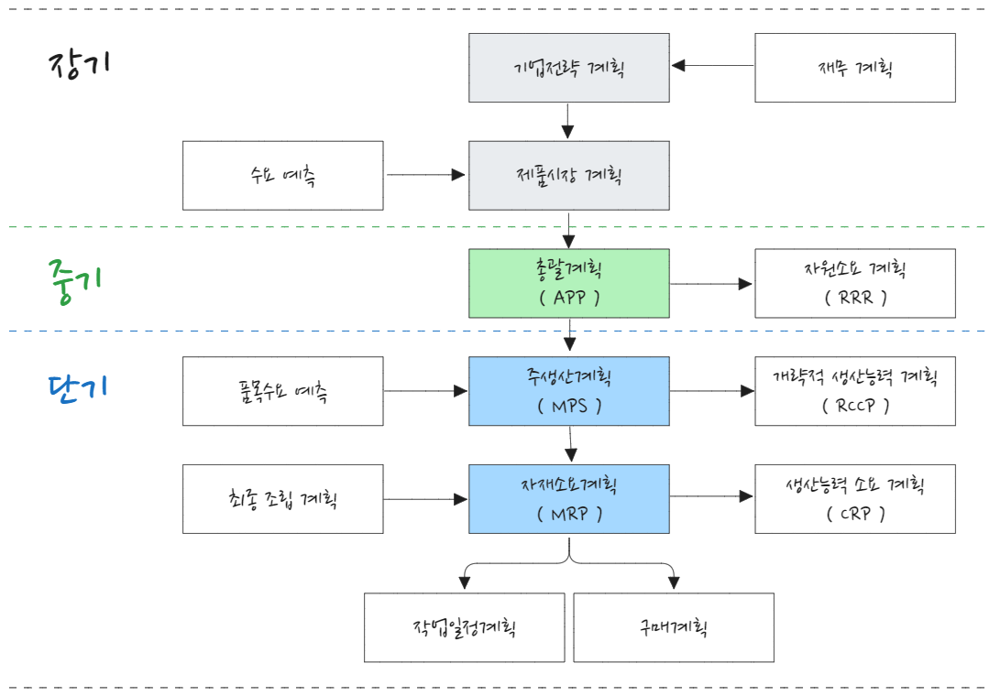

| 전략 | 수요추종전략 | 생산평준화 |
|---|---|---|
| 고용수준 | 변동 | 일정 |
| 생산율 | 변동 | 일정 |
| 재고수준 | 최소화 | 일정 보유 |
생산계획수립
총괄생산계획
총괄생산계획(APP, aggregate production planning)은 중기 수요에 대응하여 산출물 공급을 계획하는 것으로 중기적으로 기업 전반적인 생산수준, 재고수준, 고용수준 등을 설정한다.
- 총괄계획 대상 기간은 6개월에서 2년 수준이며 평균적으로 1년(12개월) 단위로 중기계획 수립
- 수요 충족을 위해 생산설비는 생산능력 범위 내에서 이뤄져야 하고 사업전략에 대한 관련 비용이 최소가 되도록 수립
- 총괄생산계획 주요 목표
-
- 이익극대화
- 생산비용 최소화
- 고객서비스 최적화
- 재고수준 최소화
- 생산율 변동 극소화
- 작업자 수준 변동 극소화
- 잔업 및 하청 최소화
- 시설 및 설비 이용률 최대화
총괄생산계획 전략적 대안은 능동적 또는 수동적으로 수립할 수 있다.
- 능동적 대안
-
- 수요이동 촉진
- 수요 지연 촉진
- 보완적 제품 개발
- 수동적 대안
-
- 재고수준 변경
- 작업자 수준 변경
- 생산율 변경
- 시간제 작업자 활용
총괄생산계획 입력과 산출은 다음과 같다.
- 입력(Input)
-
- 시장수요, 상황
- 제도 및 법규
- 경쟁업체 정보
- 기술변화
- 인력수급(Man)
- 설비능력(Machine)
- 재고수준(Material)
- 기타 생산관련 정보
- 산출(Output)
-
- 총괄생산계획
- 재고수준
- 인력 수준(고용/해고)
- 정규 및 잔업/특근 시간
- 하청 생산량
- 기타 생산계획
- 총괄생산계획
생산 계획 구조

생산계획은 장기, 중기, 단기 계획으로 수립한다.
- 장기계획(2년 이상)
-
- 기업전략 계획, 제품 시장 계획, 재무계획(공장입지, 생산능력계획, 설비투자계획, 사세 확장) 등
- 중기계획(6개월 ~ 2년)
-
- 총괄계획, 인력계획, 자재계획, 외주계획
- 단기계획(6개월 이내)
-
- 생산계획(분기, 월별, 주별, 일별 예측)
총괄생산전략 종류
총괄생산계획은 변화하는 수요 대처와 기업 이윤 극대화를 위해 손실과 비용이 최소화 되도록 결정한다. 생산계획전략에는 수요추종 전략, 생산평준화 전략, 혼합 전략이 있다.
수요추종 전략은 수요변동에 따라 생산량과 고용수준을 변화시키는 방법이다. 즉, 수요량이 증가하게 되면 고용을 하고, 반면 수요가 감소하게 되면 해고하는 방법이다. 단, 종업원수를 다음과 같은 방법으로 일정하게 유지할 수 있다.
- 종업원수 일정 유지
-
- 잔업, 특근, 초과근무 또는 근무시간 단축이나 하청 활용
- 장점: 종업원 고용 불만 해소
- 단점: 잔업수당, 조업단축 유휴비용, 하청비용이 큰 경우 사용이 곤란하고 지나친 초과근무로 사기, 품질저하 및 하청업체 및 하청업체 품질 관리 어려움
생산평준화 전략은 변화하는 수요에 대하여 생산수준과 고용수준을 일정하게 유지하는 방법이다. 종업원 고용불안을 해소하고 과도한 잔업 및 하청 등 비용과 품질문제를 회피할 수 있는 장점이 있다.
- 수요 대응 전략
-
- 재고를 활용하는 방법
- 수요가 작으면 일정 수준 생산 유지 → 적정재고 유지, 수요가 많을 때 활용
- 수요 자체를 조절하는 방법
- 수요가 많으면 납기를 연장, 수요가 적으면 가격할인 등 판매촉진을 통해 수요 활성화
- 총 생산량을 일정하게 유지하는 방법
- 제품 품목별 기간에 따라 생산량을 조절
- 1개 생산라인에서 다른 제품을 병행 생산
- 계절성 품목으로 겨울에는 난방 전열가전, 여름에는 선풍기, 냉방가전 생산 증대
- 재고를 활용하는 방법
혼합전략은 수요추종 전략과 생산평준화 전략을 혼합한 방식으로 수요 변동에 유연하게 대응하고 종업원 고용 및 재고 수준 등 상황에 따라 대처하는 방법이다. 추종전략에서는 수요변화에 따라 고용수준이 변화하고 생산평준화 전략에서는 고용 수준에 변화가 없다. 기업에서는 두 가지를 혼합한 혼합전략이 더 널리 사용된다. 어떤 수요 및 공급관리 수단을 혼합하여 사용하느냐는 기업마다 처한 환경과 경영활동에 따라 달라진다. 적절한 총괄계획 전략은 생산활동이나 업무 특성에 따라 달라진다.
- 자동차, 전자업종 등 숙력된 작업자 확보가 어려운 경우
-
- 점진적 고용증대를 통한 생산능력 확충과 동시에 잔업, 하청을 활용
- 노동 집약적이며 노동력확보가 용이한 경우
-
- 고용수준을 조절하여 수요에 대응(토목공사, 택배 등)
수요추종 전략과 생산평준화 전략을 비교하면 다음과 같다.
| 요인 | 추종전략 | 평준화전략 |
|---|---|---|
| 요구되는 노동기술 수준 | 낮음 | 높음 |
| 직무 재량권 | 낮음 | 높음 |
| 보수 | 낮음 | 높음 |
| 종업원당 요구되는 훈련 | 낮음 | 높음 |
| 노동력 이직률 | 높음 | 낮음 |
| 종업원당 채용-해고 비용 | 낮음 | 높음 |
| 요구되는 감독 양 | 높음 | 낮음 |
| 요구되는 예산 수립 및 예측 유형 | 단기 | 장기 |
기준일정계획(MPS)
기준일정계획(MPS, master production schedule)이란 생산시스템에서 생산되는 개별 최종품목에 대한 단기생산계획으로 주단위로 총괄수요를 분해한 개별품목 수요에 대한 충족계획이다.
- MPS 수립 목표
-
- 납기준수 - 고객과 약속한 일정에 맞출 수 있는지 일정 수립 → 생산 신속성
- 생산비용 최소화 - 생산설비에 대한 과중한 부하 또는 적정한 생산 능력 효율적 활용 → 생산비용 최소화
- MPS 시간 구역
-
- 동결된 시간(frozen): 특별상황 관리책임자 허가 없이 생산일정 변경 불가
- 확정된 구간(fixed): 예외적인 상황 발생에 한하여 변경 가능
- 채워진 구간(full): 일정변경, 사용 가능한 생산능력 및 주문처리를 위해 할당되었으나 일정 변경으로 인한 비용에는 큰 영향을 미치지 않음
- 개방된 구간(open): 새 주문을 자유롭게 반영 가능, 아지 생산능력 미 반영
MPS 작성 절차는 다음과 같다.
- 재고량 예측치 및 확정된 주문량에 따라 예측 보유재고량 산출
- 수요량 대비 재고 부족 시 생산 LOT 크기 감안하여 MPS 수량 계획 수립
\[ 예측된 \ 재고보유 \ 수량 \ = \ (직전기간 \ 말 \ 재고 \ 수준) + (MPS \ 수량) - (예측된 \ 수요량) \] 약속 가능수량(ATP, available to promise quantities)은 고객과 약속한 제품이나 서비스 수량을 의미하며 다음과 같이 계산한다.
\[ ATP= \begin{cases} \text{(기초재고보유량) + (MPS 수량) - (다음번 MPS가 도래하기 전까지 확정된 고객주문량), 첫째 주}\\ \text{(MPS 수량) - (다음 번 MPS가 도래하기 전까지 확정된 고객주문량), MPS가 계획된 주} \end{cases} \tag{10.1}\]
RCCP

RCCP(개략적 생산능력계획, rough-cut capacity planning)은 MPS 실행에 소요되는 생산능력을 추정하여 이를 효과적으로 확보하기 위한 개략적인 계획 활동을 의미한다. RCCP 목적은 생산 소요계획과 가용 생산이 일치하도록 하여 특정 자원 과대 또는 과부하가 걸리지 않도록 한다.
- 종합계수법
-
- RCCP 기법중 가장 단순한 방법으로 제품 수량, 제품 단 단위단 노동시간, 각 작업장 가동실적 등 3가지 데이터를 이용하여 계획을 수립함
- 생산능력 명세서법
-
- 제품 하나를 생산하는데 각 작업장별(또는 공정별)소요시간을 파악하여 생산능력 명세표를 DB화하여 각 작업장에 배분하는 방식
- 부하프로필법
-
- 일, 주, 분기별 생산능력 소욜를 도표로 나타내는 것으로 정상능력을 초과하는 기간에 대해 부하를 조정함
- 부하조정법: 잔업, 이동배치, 생산조정 등 조정불가시 MPS 조정
일정계획
일정계획(scheduling)이란 생산계획 내지 제조명령을 시간적으로 구체화 하는 과정이다. 생산자원을 합리적으로 이용하여 생산할 품목과 생산량을 예정된 시간에 생산할 수 있도록 계획하고 통제하는 것이다.
- 일정계획 종류
-
- 대 일정계획(master scheduling), 기준일정계획이라고도 하며 수주에서 출하까지 일정계획을 말함
- 중 일정계획(operating scheduling), 대 일정계획을 토대로 공정 개시일과 완료일을 작성
- 소 일정계획(detail scheduling), 세부일정계획으로 작업자, 기계별 일정계획을 말함
- 일정계획 기능
-
- 부하결정 → 작업우선순위결정 → 작업할당 → 작업배정 → 진도관리 순으로 진행
- 기준일정
-
- 작업시간 + 준비작업시간 + 여유시간 + 정체시간
공정관리는 계획기능과 통제기능으로 구분할 수 있다.
| 계획기능 | 통제기능 |
|---|---|
| 절차계획(순서계획) | 작업배정(우선순위 통제) |
| 공수계획(능력소요계획) | 여력관리 |
| 일정계획 | 진도관리 |
- 절차계획(routing)
-
- 작업계시에 앞서 능률적이고 경제적인 작업절차를 결정하기 위한 것(작업방법과 순서가 정해짐)
- 공수계획(loading)
-
- 생산계획량을 완성하는데 필요한 인원이나 기계 부하를 결정하게 됨
- 일정계획(scheduling)
-
- 작업순서와 방법이 결정되고(절차계획), 생산량이 공수로 환산되면(공수계획), 작업 시작시간과 종료시간을 결정하는 과정
- 작업배정(dispatching)
-
- 절차계획과 일정계획표에 따라서 생산을 개시하도록 허락
- 여력관리(capacity control)
-
- 통제단계에서 실제 능력과 부하를 조사하여 양자 균형을 이루도록 조정
- 진도관리(expedition or follow up)
-
- 작업배정(작업지시)에 의해 작업 진도상황이나 과정을 수량적으로 관리하는 것
순서계획
주문생산은 다양한 일감이 상이한 순서로 작업하므로 작업순서 결정과 부하 결정문제가 생산성에 영향을 미친다. 통상 공장에서는 작업 순서가 동일할 경우를 대비하여 서너개의 작업 우선순위 규칙(Priority rule), 작업배정규칙(Dispatching rule)을 함께 사용한다.
우선순위 규칙 평가 기준은 다음과 같다.
- 납기 이행
- 작업 진행 시간(flow time) 최소화
- 재공품(WIP) 최소화
- 기계/작업 유휴시간 최소화
작업순서 결정하는 방법은 크게 지역특성을 고려한 방법과 전체특성을 고려한 방법이 있다. 지역특성 순위규칙(local sequencing rule)은 현재 작업장에서 주어진 상황을 고려하여 작업순서를 결정하는 방식이고 전체특성 순위규칙(global sequencing rule)은 후속 잔여 작업장 특성까지 고려하여 작업우선순위를 결정하는 방식이다.
단일 설비 일정 계획 기준 다음과 같은 작업 순서 결정 방식이 있다.
flowchart TD
subgraph s01[지역특성 순위규칙]
direction LR
11[선착우선]
12[최소작업시간 우선]
13[최소납기우선]
end
subgraph s02[전체특성 순위규칙]
direction LR
21[긴급률법]
22[최소여유시간 우선]
23["잔여작업<br>최소여유시간 우선"]
end
작업순서 --- s01 & s02
- 작업순서 결정 방법
-
- 선착순 우선(FCFS, first come first served): 도착 순서에 따라 처리
- 최단 처리 시간법(SPT, shortest process time): 처리 시간이 짧은 작업부터 실행
- 납기 우선법(EDD, earliest due date): 납기일이 도래하는 작업부터 실행
- 긴급률 법(CR, critical ratio): 최종 잔여일까지 남은 시간과 작업을 처리하기 위해 소요되는 시간 간 비율을 나타내며 비율이 작은 작업부터 처리하는 규칙
- CR이 1보다 작으면 작업이 지연된 상태임
- 최소 여유 시간법(s): 납기일까지 남은 여유시간이 가장 짧은 작업부터 진행
- 잔여 작업 최소 여유시간 우선 처리법(STP/OP): (최종납기 잔여작업 처리 소요시간)/(잔여작업일수), 즉 잔여작업 평균유휴시간 크기를 산출하여 이 값이 가장 작은 것부터 처리함, 작업이 지연되는 경우 STP/OP 값이 음(-) 값을 가짐
n개 작업을 2대 기계에서 작업할 경우 우선 순위 규칙은 존슨법을 적용할 수 있다.
존슨법
존슨법은 두 개 사업장을 거치는 경우 또는 2대 기계에서 작업을 할 경우 우선순위를 결정하는 방법이다.
다음과 같은 가정과 기준으로 수행한다.
- 각 작업이 동일한 순서로 두 개 작업장을 거침
- 작업장(기계)1 → 작업장(기계)2
- 최종 작업이 두 번째 작업장에서 완료되는 시간이 모든 작업이 끝나는 시간(makespan)이 최소가 되도록 작업 순서를 결정
- 두 작업장 총유휴 시간 최소화
우선 순위 규칙은 다음과 같다.
- 작업장별 작업 시간치를 표에 기입
- 작업장 1, 2에 관계없이 처리시간이 가장 짧은 작업(최소 작업시간) 선택
- 가장 짧은 처리 시간이 작업장1에서 발생하면 그 작업을 가장 앞 순위에 놓고, 작업장2에서 발생하면 가장 뒤 순위에 놓음
- 2.에서 순위가 결정된 작업은 고려 대상에서 제외
- 모든 작업 순서가 결정될 때까지 2와 3을 반복
| 작업 | 작업1(일) | 작업2(일) |
|---|---|---|
| A | 5 | 4 |
| B | 2 | 3 |
| C | 6 | 5 |
| D | 3 | 4 |
| E | 6 | 7 |
존슨법 규칙에 따라 작업 순서는 [B-D-E-C-A]로 결정된다. 작업순서에 따른 작업시간과 유휴 시간은 다음과 같다.
- 작업장1: B(2) + D(3) + E(6) +C6) + A(5) = 22(일)
- 작업장2: 유휴(2) + B(3) + D(4) + 유휴(2) + E(7) + C(5) + A(4) = 27(일)
작업장1은 22일만에 작업 완료되지만 작업장2가 27일 완료되므로 5일간의 유휴시간이 발생한다. 작업장2는 작업장1에서 완료되어야 진행할 수 있어 4일간의 유휴일이 발생한다.
생산능력 결정 전략
생산시스템을 신설, 확장 시 생산능력을 결정하게 된다. 생산능력 결정 시 여유 능력 크기는 얼마로 할 것인가? 증설 시기는 언제로, 규모는 얼마로 할 것인가 등을 검토해야 한다.
생산능력 결정 요인은 크게 영향요인과 제약요인이 있다.
- 영향요인
-
- 시설요인(Pysical Factors), 공정 및 시설 입지, 공정설계 및 건물, 시설 및 설비 배치, 공장 환경, 운반시설 등
- 제품 및 서비스 요인(Proudct/Service Factors), 제품 및 서비스 설계, 단순화/표준화, 품목 최적 구성, 품질 요인, 원자재 구성 및 소요량 등
- 공정요인(Process Factors), 공정 ㅁ치 설비 생산량, 공정 및 설비 븡력
- 인저요인(Human Factors), 직무설계, 직무내용, 작업방법, 작업강도, 작업환경, 교육 및 경험, 동기부여, 보상 등
- 시스템 가동 상의 요인, 설비보전, 일정관리,품질관리 등 생산 시스템 관리 기준
- 제약요인
-
- 시장
- 원자재
- 자금
- 노동력
기간별 생산능력 계획시 고려사항은 다음과 같다.
- 단기 생산능력 계획
-
- 가격조정
- 정비 계획 조정
- 생산성 향상 방안
- 납기 연기
- 재고 수준 변화
- 종업원 교육
- 고용수준 가동률 변동
- 고융수준 변동
- 장기 생산능력 계획
-
- 공격전략 - 장기적인 시장 확보 및 시장점유율 향상, 여유능력으로 불확실한 수요에 대한 대응이 가능하며 납기지연이 줄어 들어 고객에게 신뢰감을 주어 안정적인 구매자 확보 가능
- 방어전략 - 생산능력 효율 향상으로 투자에대한 수익률 향상, 장기적으로 시장점유율을 잠식당할 위험 존재
- 평균전략 - 약간의 초과 능력과 수요 부족을 허용하는 생산계획이 바람직
장기적으로이익을 최대화하는 관점에서 장기 생산능력 의사결정에 대한 체게적인 접근은 다음과 같다.
- 대규모 접근법
-
- 규모의 경제로 연간 생산 소비를 감소시킬 수 있으나 고정비 부담이 크고 수요 변동이나 제품 믹스 시 유여넛이 떨어진다
- 점진적 접근법
-
- 단계적으로 작은 단위로 확장하는 것으로 소요자금이 적게 들며 유연성이 큼
- 필요 생산용량 추정
- 예측된 수요와 현재 용량 간 차이 계산
- 대안 개발
- 대안 평가
- 정성적 평가 - 수요, 경쟁자 반응, 기술 변화, 비용 추정치 등 불확실성
- 정량적 평가 - 현금 흐름
- 단계적으로 작은 단위로 확장하는 것으로 소요자금이 적게 들며 유연성이 큼
- 생산시설에 대한 의사결정 절차
-
- 시설 규모 결정 - 최적 규모 설정
- 입지 설정 - 관련된 모든 비용 합이 최소가 되도록 결정
생산능력 전략 사전 검토 사항
경영자는 생산능력을 결정하기 앞서 생산능력 전략 차원에서 여유능력 크기와 확장 시기 및 규모를 검토해야 한다.
- 여유능력 결정(Sizing Capacity Cushion)
-
- 여유능력(capacity cushion)은 기대를 초과하는 잉여 능력으로 최적 여유 능력은 산업 분야별 차이가 있다.
- 충분한 여유능력은 수요가 증가하는 추세에 있거나 불확실한 경우 또는 안정적인 공급을 요하는 경우에 필요하다.
- 지나친 여유능력은 과대한 유지비용으로 수익률을 저하시킬 수 있다.
- 확장 시기와 규모(Timing and sizing Expansion)
-
- *사전 확장 전략**(proactive capacity strategy)
- 재고 부족 손실 > 잉어 능력 비용 x 2배
- 여유 내지 초과 능력을 유지하는 비용보다 재고 부족(품질) 손실이 상당히 높을 때, 고성장 산업에서 보통 채택되는 확장주의 전략(Expansionist Strategy)
- 수요에 앞서가는 사전 확장 전략은 규모의 경제와 학습효과가 강한 경우 생산능력 크기가 상대적으로 크므로 능력 부족으로 인한 판매기획 상실을 줄일 수 있다.
- 이들 산업에서 여유 능력을 갖고 있는 기업은 능력이 한정된 경쟁업체들로부터 시장점유율을 잠재적으로 확보할 수 있다.
- 사후 증설 전략(Reactive Capacity Strategy)
- 재고 부족 손실 < 잉여 능력 비용 x 0.67
- 여유 능력 유지 비용이 품절 비용ㅇ를 초과할 때 채택되는 전략으로 수요를 관망하다가 증설하는 보수 전략
- 능력 이용률은 높지만 시장 위치가 불안한 기업에서 채택
- 수요를 관망(wait and see)하다가 증설하는 보수적인 증설 전략으로 관망 기간 중 어느 정도 부족 능력은 감수해야 한다.
- 사후 증설 전략은 투자 위험을 줄일 수 있으나 수요에 뒤처지며 생산능력 부족을 메우기 위한 잔업, 임시고용, 하청 등 단기적인 대안에 의존하는 경우가 많다.
- 이 전략은 능력 이용률 높지만 시장 위치가 불안한 기업에서 흔히 채택된다.
- 경쟁업체에서 동시에 생산능력을 증대시키게 되어 많은 잉여 능력을 유발하여 경쟁은 더울 치열해진다.
- *사전 확장 전략**(proactive capacity strategy)
- 기대 가치 유지 전략(Expected Capacity Strategy)
-
- 기대 수요에 근접한 능력 유지(사전/사후 절충형)
- 사전 확장, 사후 증설 전략을 절충한 접근 방식으로 가급적 기대 수요에 근접한 능력을 유지하려는 전략
- 이 경우 충분한 능력을 갖지 못한 가능성만큼(잉여) 능력을 가질 가능성을 만들어 손실을 상쇄하는 전략이다.
전략 대안 평가
간편한 전략평가 방법으로 단위당 품절 손실과 함게 잉여 능력 비용을 추정하는 능력비율(Capacity Ratio, CR)을 산정하여 판단할 수 있다.
- 질적요인
-
- 시설투자 자금 동원 능력
- 주변 생활 환경
- 지역 기술 및 교육수준
- 고객과 근접성으로 인한 수요 창출
- 비용요인
-
- 지역별로 차이가 날 수 있는 인건비
- 세금 및 보험료
- 전기, 가스, 수도 등 공공사업 비용
- 수송 비용
- 토지, 건물 및 설비비용
- 용량 계획 평가 도구
-
- 수요 불확실성과 변동을 보다 공식적으로 분석 가능한 도구
- 대기행렬 모형 - 무작위적이고 독립적인 고객들의 행동을 도착 시간과 서비스 요구 측면에서 검토
- 시뮬레이션 - 복잡한 대기 열 문제를 시뮬레이션을 통해 프로세스 병목과 여유 용량을 찾아냄
- 의사결정 나무 - 수요가 불확실하고 이어지는 의사결정이 포함될 경우 다양한 설비확장안 평가 시 사용
- 수요 불확실성과 변동을 보다 공식적으로 분석 가능한 도구
- 생산능력 결정 기법
-
- 생산능력 결정 기법으로 일반적인 방법은 선형계획법과 확률계획법이다.
- 선형계획법은 장래 제품 수요와 경쟁기업 공급능력을 비교적 정확하게 예측할 수 있는 확실한 상황에서 유용
- 확률계획법은 장기적 제품 수요를 추정하지만 미래 제품 수요와 공쟁기업 공급 능력을 상대적으로 정확하게 예측하기 어려운 경우 유용, 대표적으로 대기행렬, 시뮬레이션, Decision Tree Approach 등
- 생산능력은 조직 전체에 걸쳐 전략 및 프로세스와 밀접하게 연계되어야 함
- 입지 문제, 자원 유연성, 재고 같은 분야의 의사결정을 할 때 여유 용량에 미치는 효과를 고려함
- 생산능력 결정 기법으로 일반적인 방법은 선형계획법과 확률계획법이다.
능력비율(CR, capacity ratio)
CR은 단위당 품절 손실과 함게 잉여 능력을 추정하여 능력 비율을 산정, 평가하는 지표이다.
\[ 능력비율(CR) = \frac{(C_s - C_e)}{C_s} \] \[ 여기서 \ C_s는 \ 단위당 \ 품절 \ 손신, C_e는 \ 단위당 \ 잉영능력 \ 유지 \ 비용 \]
- CR에 따른 생산능력 전략
-
- CR <= 0.5
- 품절 비용 < 0.67 x 잉여 능력 유지 비용
- 사후 증설 전략
- -0.5 < CR < 0.5
- 기대 가치 유지 전략
- CR >= 0.5
- 품절비용 > 2 x 잉여 능력 비용
- 사전 확장 전략
- CR <= 0.5
MRP
MRP 3대 필수요소
MRP 3대 필수요소는 기준일정계획(MPS), 자재명세서(BOM) 그리고 재고기록파일(IRF)이다.
- MPS
-
- 기준일정계획(MPS) 참고
- BOM
-
- BOM 참고
- IRF
-
- 재고관리에 기본이 되는 자재별 수불현황과 현재고, 조달 기간 명시
BOM
BOM(bill of material)은 상위 품목과 부품 간 관계와 사용량, 단위 등을 표시한 리스트로 도표 또는 그림을 의미한다. 상위 품목이란 하나 이상 부품으로 제조되는 품목이며, 부품은 상위 품목으로 전환되기 위해 적어도 하나 이상 공정을 거쳐야 하는 품목이다. 즉 BOM은 제품을 구성하는데 필요한 원자재, 부품 또는 부분조립품 소용량과 조립순서, 가공순서를 나타낸다. MRP 시스템을 운영하는데 기본적으로 사용되는 입력자료이다.